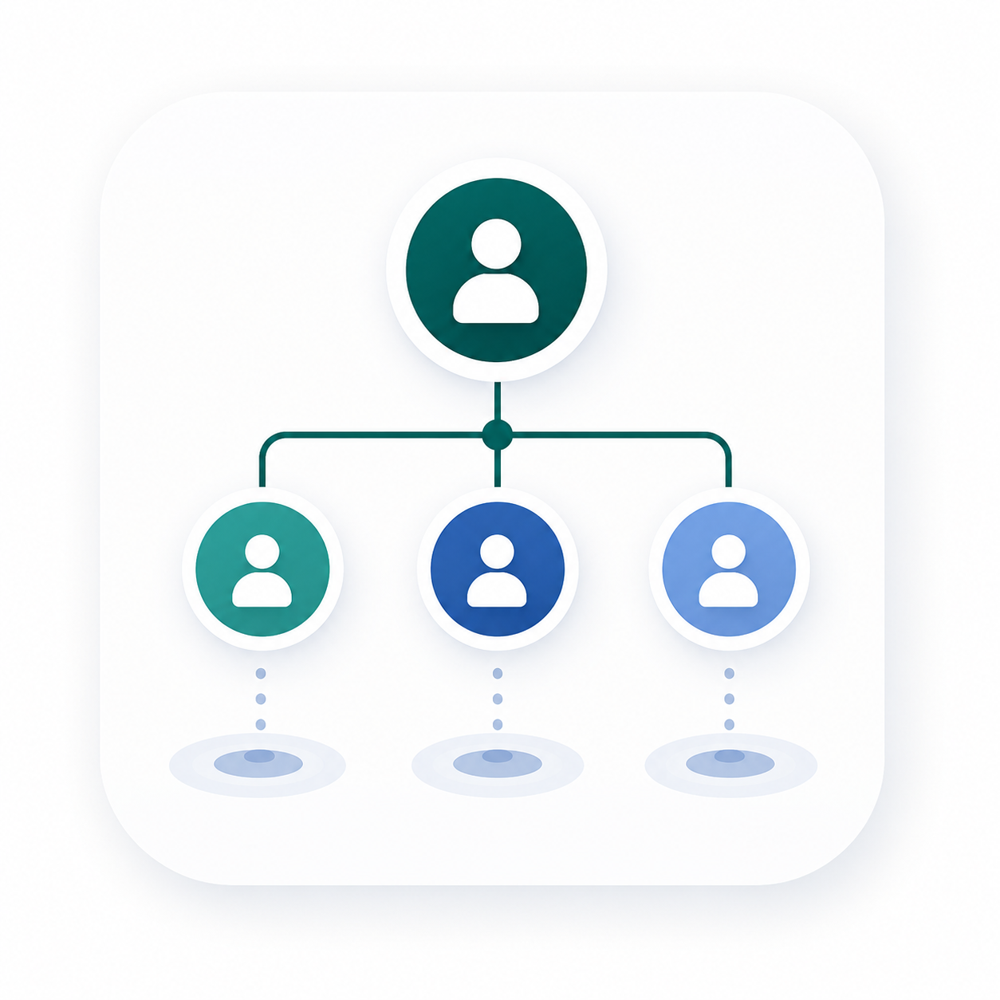
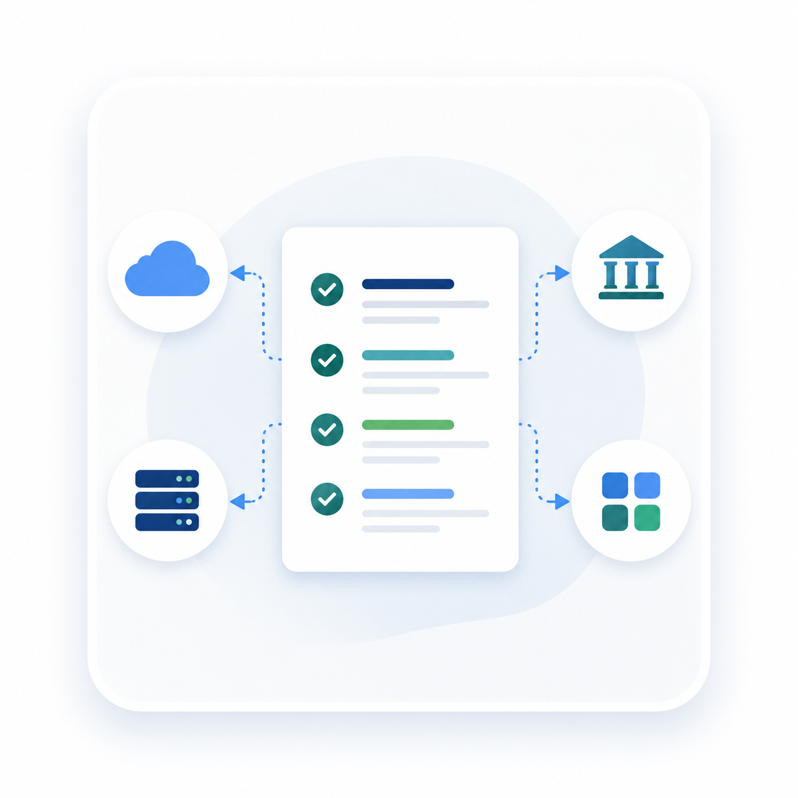
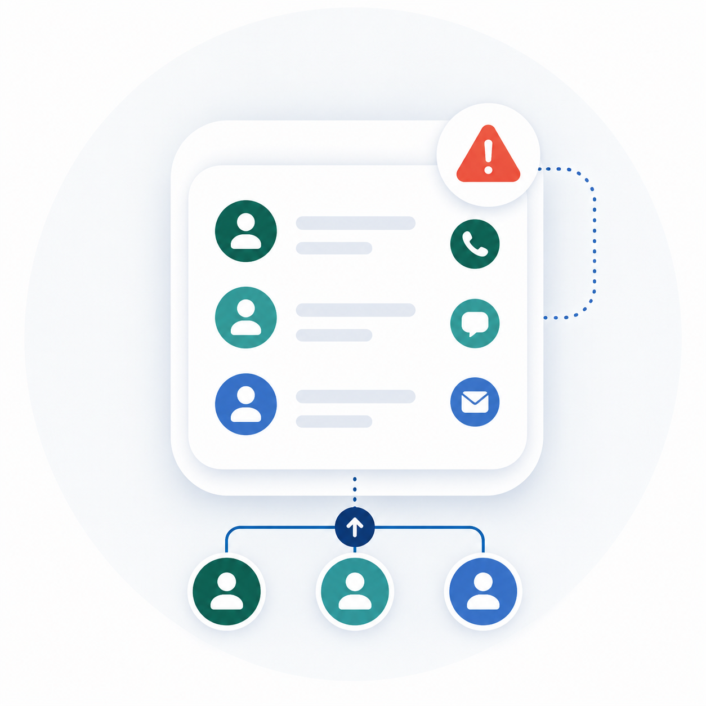
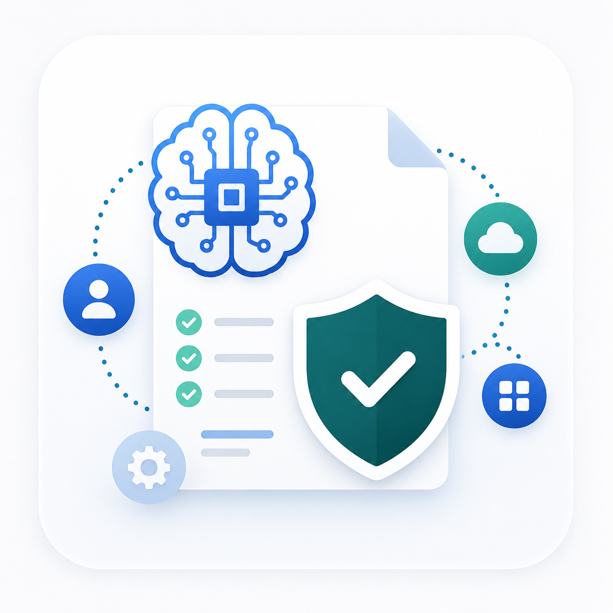

Prioritized risk findings
Plain-language scenarios tied to operational interruption, financial loss, sensitive-information exposure, customer or donor trust, and mission impact.
For small businesses and small nonprofits
Receive a fixed-scope, independent leadership report that turns scattered systems, provider assumptions, access questions, AI use, and security concerns into prioritized findings, assigned responsibilities, precise vendor questions, and a practical action plan.
No tool sales. No recurring contract. No penetration testing or compliance certification.
Concrete work product
The report is built from your organization’s systems, accounts, providers, people, and operating dependencies. Each material finding shows the evidence basis, business effect, responsible party, recommended action, priority, and limitation.
Plain-language scenarios tied to operational interruption, financial loss, sensitive-information exposure, customer or donor trust, and mission impact.

02A clear view of what leadership, employees, volunteers, IT providers, accountants, software vendors, and other partners reportedly own.

03Precise questions that separate documented coverage, customer-retained duties, shared responsibilities, and unconfirmed assumptions.

04Who should be contacted for compromised email, suspected fraud, lost access, data exposure, malware, or a service outage—and who coordinates decisions.
Sequenced actions with an accountable party, supporting parties, dependencies, expected evidence of completion, and decisions requiring leadership approval.

06Where relevant, the review identifies AI tools in use, sensitive information exposure, connected applications, access ownership, human-review responsibilities, vendor controls, and unclear incident accountability.
A focused review of what matters most, what remains uncertain, what belongs with a provider or specialist, and which decisions should happen first.
Different from an MSP
Many providers manage devices, accounts, software, backups, monitoring, and support. Leadership still needs to know which business or mission risks matter most, what the provider contract actually covers, what remains the organization’s responsibility, and how decisions will be coordinated across multiple parties.
The service does not grade or replace your provider. It produces an independent, evidence-labeled map of responsibilities and unresolved questions so leadership can make better decisions and have more productive provider conversations.
Fixed-scope founding services
Both services use summary-level, non-secret information and are tailored to a small business or nonprofit environment.
For leadership that needs a fast, bounded view of its most important concerns and immediate decisions.
Leadership can identify the most important near-term risks, understand where ownership is unclear, and assign a small set of actions without buying another tool or commissioning a broad assessment.
Standard scope: one organization, one agreed environment, up to 10 systems or accounts, up to 5 responsible parties or providers, and one 45-minute leadership session.
For leadership that needs a fuller view of operational risk, provider boundaries, incident coordination, and a sequenced improvement plan.
Leadership has a documented risk picture, named owners, clearer provider and AI-vendor boundaries, an incident coordination structure, and a practical roadmap that can guide internal work and provider follow-up.
Standard scope: one organization, one agreed environment, up to 20 systems or services, up to 10 responsibility holders, up to 3 major providers, and up to 3 short redacted documents.
Included when relevant
The review can include public AI tools, Microsoft Copilot, Google Gemini, meeting assistants, writing tools, AI features embedded in business software, and AI-connected applications within the normal package limits.
We examine what information may be shared, who approves use, how accounts and integrations are controlled, where human review is required, what the vendor or IT provider covers, and who owns an incident involving exposed data or unreliable output.
Boundaries: this is a governance and security review. It does not include model testing, red-teaming, bias testing, algorithm validation, legal compliance certification, or secure AI implementation.
See the work product
This fictional example demonstrates the report structure, evidence labeling, priority logic, responsibility analysis, and action clarity a customer receives.
When this service is useful
Clarify what the current provider covers and which responsibilities remain before renewing or replacing services.
Identify administrator access, shared accounts, system ownership, and offboarding questions after people change roles or leave.
Turn a warning event into defined contacts, ownership, and prioritized preventive actions without treating it as an emergency-response engagement.
Clarify data, access, vendor, backup, and incident responsibilities before organizational dependence increases.
About Victor
Victor Yu is a CISSP and GIAC-certified cybersecurity professional with experience in identity and access management, MFA, enterprise support, incident escalation, platform reliability, and translating technical risk for customers and leadership.
His nonprofit, volunteer, HOA, and community-governance experience informs how the service handles limited staff capacity, shared responsibility, board oversight, and dependence on outside providers. This is relevant background, not a claim of prior commercial customer delivery.
Clear boundaries
These are limited advisory reviews based on customer-provided, summary-level information. They do not include penetration testing, vulnerability scanning, technical-control validation, AI model testing or red-teaming, bias or algorithm validation, formal risk assessment, compliance certification, provider auditing, remediation, managed monitoring, secure AI implementation, legal or insurance advice, emergency incident response, or guaranteed outcomes.
Start with fit, not a sales pitch
Use this inquiry to identify the organization, the service you are considering, and the outcome you need. Do not send passwords, sensitive records, configuration exports, or confidential incident evidence.
Draft-site notice: this form currently prepares an email on your device. It does not upload or store the information on this website.